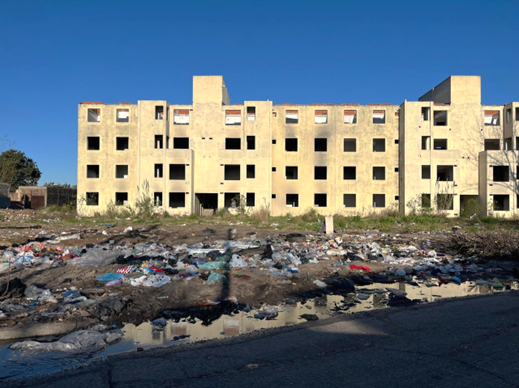

Otra ciudad
empieza con
una idea.
Conocer el territorio. Abrir conversaciones.
Construir políticas que cambien lo cotidiano.
La ciudad se piensa
con quienes la habitan.
Somos un espacio multidisciplinario que investiga, diseña e impulsa políticas públicas locales desde San Martín.
Unimos conocimiento y participación para convertir los problemas del territorio en una agenda de transformación.
10 políticas para abordarlos.
la ciudad en conjunto.
San Martín.
Del dato
a la propuesta.
Diez puntos de partida para debatir
la ciudad que queremos construir.
10 propuestas para explorar
Los datos y las iniciativas provienen de la presentación “10 problemas, 10 políticas”. Cada ficha conserva la referencia y el período indicados en el documento. Las iniciativas integran una agenda de propuestas para debatir.

JOSÉ LEÓN SUÁREZ / SAN MARTÍNEl territorio
no es un fondo.
Es el punto
de partida.
Investigar cerca. Escuchar a quienes viven los problemas. Pensar las soluciones en común.
Leé nuestra investigación sobre hábitat ↗Fotografía: Área de comunicación IC, 2025.Publicada en Café de las Ciudades, abril de 2026.
Escuchar. Conocer.
Proponer.
Escuchar el barrio
Las experiencias cotidianas ponen los problemas sobre la mesa.
Mirar la evidencia
Los datos ayudan a entender la escala y las desigualdades.
Abrir el debate
Las propuestas son un punto de partida para construir en común.